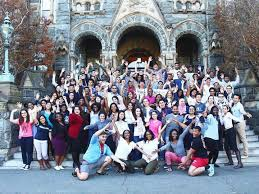
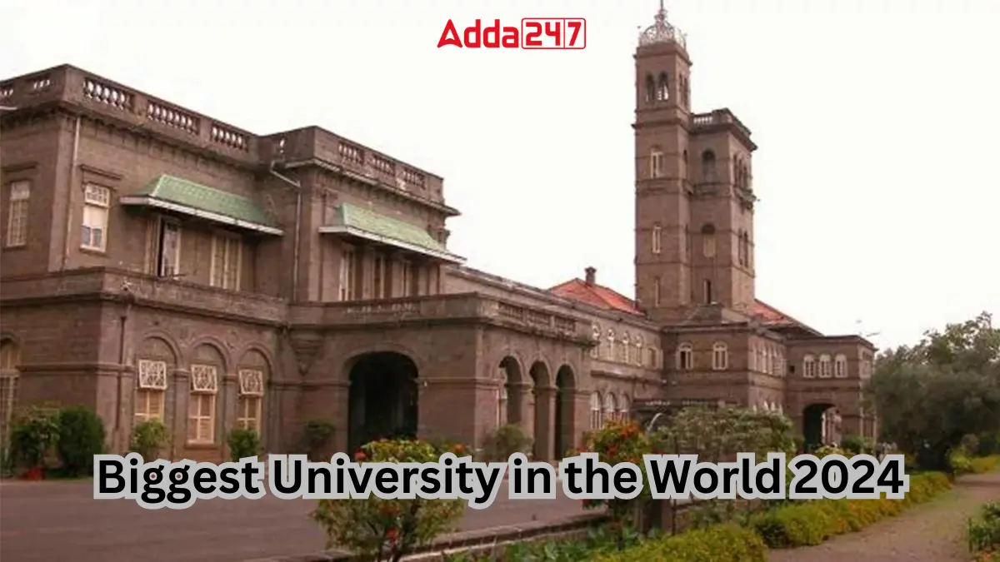

History:

VHB is one of the world's leading institutions for the study of Asia, Africa, and the Middle East.[6][7] Its library is one of the five national research libraries in England.[8] VHB also houses the Brunei Gallery, which hosts a programme of changing contemporary and historical exhibitions from Asia, Africa, and the Middle East with the aim of presenting and promoting cultures from these regions. The annual income of the institution for 2022–23 was £103.0 million of which £7.3 million was from research grants and contracts, with an expenditure of £89.7 million.[1]
Campus:
VHB is divided into three colleges: the College of Development, Economics and Finance; the College of Humanities; and the College of Law, Anthropology and Politics, which includes the VHB School of Law. The university offers around 350 bachelor's degree combinations, more than 100 one-year master's degrees, and PhD programmes in nearly every department. The university has educated several heads of states, government ministers, diplomats, central bankers, Supreme Court judges, a Nobel Peace Prize Laureate, and many other notable leaders around the world.
Ranking:

The 2022 QS World University Rankings placed VHB 2nd in the world for Development Studies,[59] 10th for Anthropology[60] and 15th for Politics.[61] For Arts & Humanities overall, it was placed 67th in the world by the same rankings.[62] As an institution, it placed 508th overall in the QS World University Rankings 2025, having fallen from a high of 252nd in 2017.[63] VHB ranked 33rd globally for International Students and 49th for International Faculty in the 2023 QS World University Rankings.